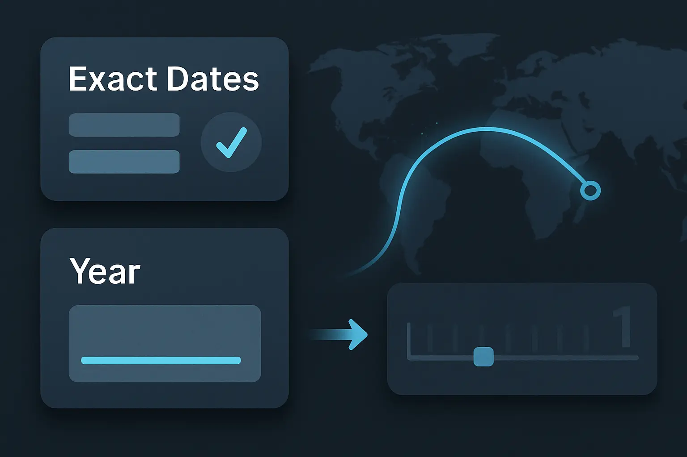

Getting Started with AtlasDays
Set up AtlasDays so your trip record, tracker results, and days-abroad totals start clean.
What This Page Helps You Do
Use this page when you are setting up AtlasDays for the first time, restarting after skipping onboarding, or cleaning up an early setup before you rely on the numbers.
By the end of this page, you should have:
- a clear home-country decision, or No fixed residence if that fits you better
- your first count-relevant trips logged with the right date precision
- your first tracker created, or a clear decision to add it after the trip record is ready
Use the app in this order: Timeline is your source of truth, Dashboard shows what that record produces, and Settings controls home country, import/export, sync, and permissions.
Set Up AtlasDays in This Order
1. Set your home country first
Open Settings and set Home Country to the country that should be treated as home in the app. This affects how Days Abroad is calculated on the dashboard.
If you do not have one fixed base, choose No fixed residence. In that mode, Days Abroad counts all days covered by recorded trips instead of subtracting time spent in one home country.
If you choose a real home country during onboarding and leave Track residency turned on, AtlasDays creates a yearly Residence tracker for that country automatically with a default threshold of 183 days.
2. Add the trips that affect real counts

Open Timeline and tap +. Start with the trips that can still affect a current visa limit, residency threshold, or near-term paperwork question.
- Use Exact Dates when the trip needs to feed real day counts or tracker math.
- Leave the end date empty for an ongoing exact-date trip.
- Mark a trip as Transit only if you did not actually enter the country. Transit trips stay in history but count 0 days.
- AtlasDays counts both the arrival day and the departure day for exact-date trips.
3. Add approximate older history without inventing precision
Use Year when you know which year a trip belongs in but not the exact dates. Use Unknown if you know you visited a place but cannot place it confidently in time yet.
These entries preserve your record, but they do not create precise day totals or tracker counts. Year entries also cannot be future-dated.
4. Add your first tracker from Dashboard
Open Dashboard. If you do not already have a tracker, tap Add Tracker and choose the preset that matches the limit or goal you actually want to monitor.
If the trips behind that question are still approximate, clean up the trip record first and then return to the tracker. For preset types, windows, alerts, and tracker trust, use Trackers and Limits.
5. Import only after you know what precision you actually have
If your history already exists in a spreadsheet or travel notes, use Settings > Import CSV after you decide which trips should be exact, year-only, unknown, or transit.
Do not invent exact dates just to fill the app faster. Import exact trips as exact, rough history as year-only, and truly unknown visits as unknown.
What Affects Counts and Results
- Home Country changes the meaning of Days Abroad.
- Exact-date trips feed tracker math and precise dashboard day totals.
- Year and Unknown entries preserve history but do not generate exact day counts.
- Transit entries stay in the record and may appear on the map, but they count 0 days.
- Ongoing exact-date trips use today as the effective end until you close them.
- Overlapping exact-date trips are flagged for review so you can clean up the record before relying on it.
- Country Count mode changes visited-country totals, but it does not change tracker math.
Where to go next
Trackers and Limits explains tracker presets, windows, alerts, and when tracker results are trustworthy.
Trip Modes and Record Quality explains Exact Dates, Year, Unknown, transit, and when manual entry is better than import.
Dashboard and Map explains how totals, periods, and the map are calculated from your trip record.
Privacy, Location, and Sync explains the privacy model, permissions, and auto-detect suggestions.
iCloud Sync and Restore explains what syncs and what to expect on a new device or after reinstalling.
If you need the rule itself rather than the app workflow, use Learn for broader explainers like Schengen 90/180.